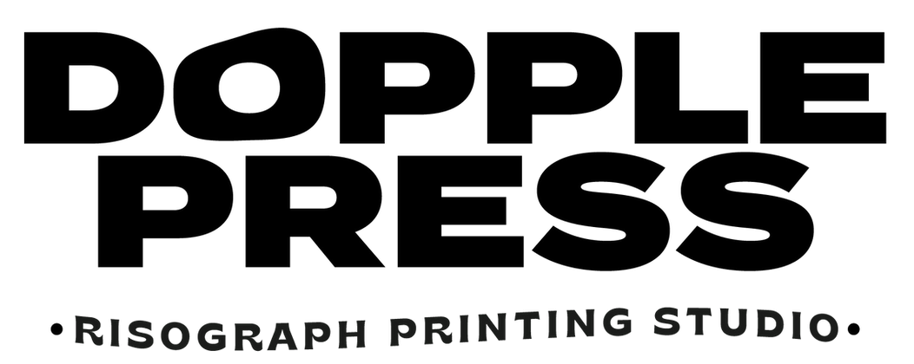

Homepage

The Risograph is a stencil duplicator machine that works in a similar way to screen printing. It creates a stencil from banana paper, this is then wrapped around an ink drum and soy ink is pushed through the voids of the stencil. As the paper glides over the rotating drum it imprints your artwork onto its surface. The colours are then layered up to create your masterpiece!
Riso is the only environmentally friendly form of printing and when you work with Dopple you should know that's taken seriously. Dopple only stocks 100% recycled, unbleached paper and compostable packaging. Everything in the studio is reused and recycled at every opportunity! Hence all the Ink canister lamp.
TL:DR It's a cool eco-friendly screen printing machine
Risograph printing originated, in the 1980s, brought into the world by the RISO Kagaku Corporation (in Japanese, 'Riso' means 'ideal' and the word 'Kagaku' means 'science). This amazing machine was initially created as speedy, low cost, high volume duplicator for churches, prisons and political campaigns. Its user base has shifted in the past decade as creatives have since repurposed the machine- harnessing its quirks and unusual colour pallet in order to make beautiful vibrant art prints. Using Riso in this new way has enabled artists to create stencil prints with an aesthetic akin to a screen print but at a much lower price.
Having been in the Riso biz for over half a decade there are some questions that tend to pop up over and over so hopefully, these are of help if you have more drop an email!
What's the maximum print Size? A3 (with a 3-5mm border)
What's the minimum quantity I can print? You can print as little as one but just like a screenprint the more you run from your set up the better the unit price becomes.
What are prices based on? Prices are based on the no. of colour stencils, dimension, quantity and stock.
What do I need to send Dopple to create my riso print? check out the 'prepping your artwork' section here!
What's the best thing to print? Dopple will advise and help you to achieve a great outcome no matter your artwork but the most economical pieces use few colours in higher quantities.
Dopple Press is a Brighton, UK based Risography studio, dedicated to creating the highest quality print and design. Since starting up in 2015 Dopple Press has had the pleasure of working with hundreds of fantastic creatives, companies, institutions, startups, students and more.
The name Dopple originates from the word 'Doppelganger', meaning to look the same but not identical. In its nature, this is exactly what you can expect from the Riso process. Each print will come with its own individual quirks thanks to the Riso process, making every print unique.
Risograph is Dopple's bread and butter and with over 15 years in design and publishing, Dopple can support any project from start to finish.